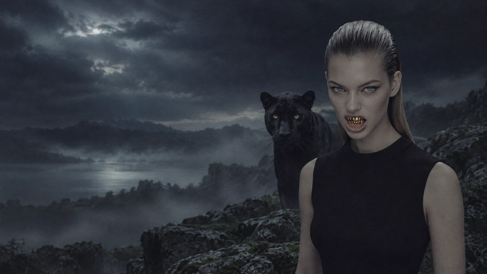
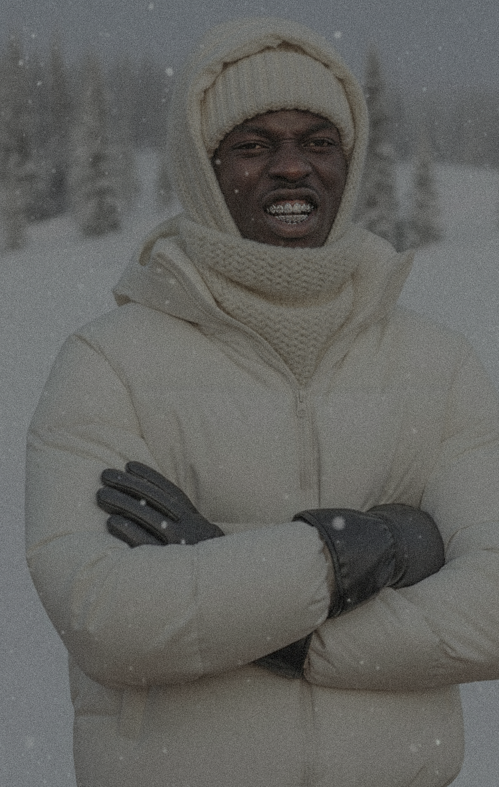
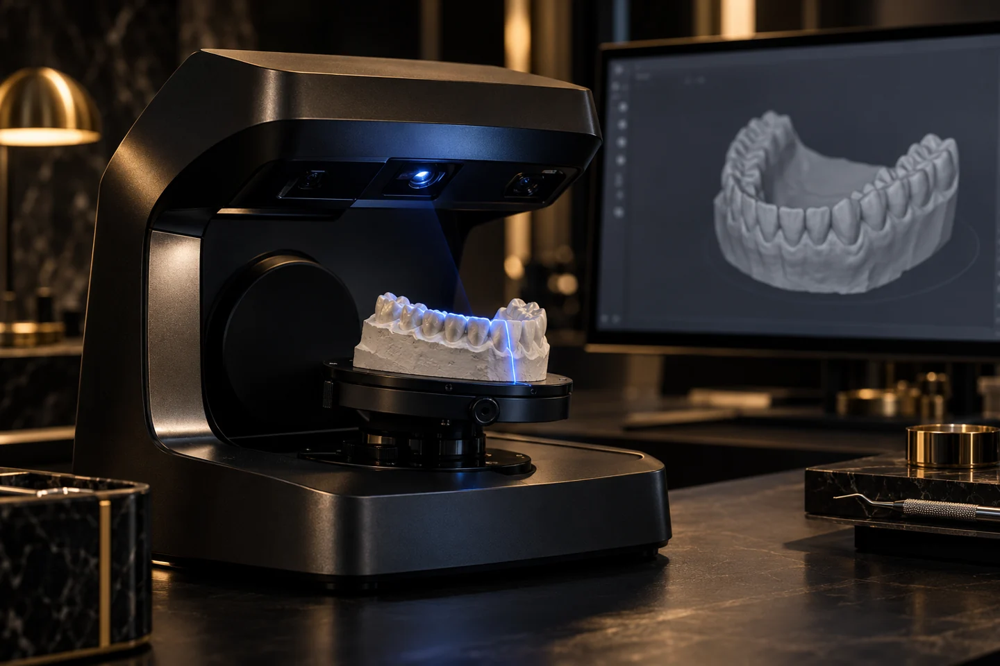
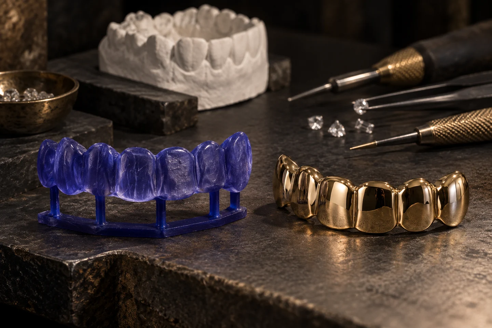

Personal design.
Every custom piece is developed around your ideas, style, and fit.

Our world / Heraklion, Crete
Jewelry with character.
For people with their own.
From Crete, with character
Opium Bite was born in Heraklion, Crete, with the purpose of creating jewelry distinguished by its character and aesthetic.
Every creation is handcrafted with careful attention to detail, fit, weight, and overall quality. To us, jewelry should not simply be beautiful; it should have presence and be worn with confidence.

The signature
Grillz are where Opium Bite began, and they remain our specialty. We do not see them as a simple accessory, but as a way to make your smile part of your personal style through a piece of jewelry made exclusively for you.
Alongside grillz, we design and create custom jewelry such as pendants and earrings, giving the same importance to quality, detail, and the individuality of every creation.
Find your expressionFrom intention to object
The process matters.
So does every detail.
Every custom piece is developed around your ideas, style, and fit.
Quality metals and carefully selected stones chosen for lasting beauty.
Careful measurements and detailed finishing from concept to completion.
From impression to expression
Every custom piece begins with an impression. At our atelier, we use two approaches to capture the shape of your teeth, before bringing your design to life through the same carefully controlled production process.
We capture the shape and contours of your teeth with a high-precision 3D scanner, creating a detailed digital impression.
This digital model becomes the foundation for a design developed around your measurements, fit and personal style.
Alternatively, we send you an alginate impression kit with detailed instructions. Once you return your impression, our team creates a plaster model at the atelier.
We then scan the plaster model in 3D and bring it into our digital design workflow. From this point, both methods follow the same production steps.


AI-generated illustrations of the production process.
Using professional 3D software, including Blender and ZBrush, we shape the jewelry around the digital impression and refine its details and fit.
We print the design directly in wax using specialized 3D printers. The wax model is the basis for the casting stage.
Using our specialized casting equipment, we cast the design in the selected precious metal.
The piece is cleaned, finished and polished. Where the design includes stones, they are set to complete its final appearance.
The original obsession
Grillz are removable pieces of jewelry worn over the teeth. They are made according to each person's mouth, dental impression, and individual style. They are not ready-made accessories, but custom pieces designed to fit correctly, feel comfortable, and give your smile a distinct identity.
Discover grillzEvery custom piece is developed around your ideas, style, and fit.
Grillz are removable pieces of jewelry worn over the teeth. Each custom piece is designed around your dental measurements and your personal style.
Our partner locations are in Heraklion, Athens, and Thessaloniki. Contact the partner nearest you using the details on our homepage to arrange your visit.
Alongside grillz, we create custom pendants and earrings. Explore the collections or speak to us about your idea.
Send us your idea, a reference, or the style you have in mind. We’ll discuss the design, materials, fit, and next steps with you.
Your story. Your signature.
Opium Bite is for people who see jewelry as an extension of their identity—for those seeking something authentic, designed around their own style and made to stand out.
Start your design